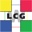

SAM is used within the WLCG and EGI.eu infrastructures for operational monitoring and reporting.
The Worldwide LHC Computing Grid (WLCG) is a global collaboration of more than 170 computing centres in 34 countries, the 4 LHC experiments, and several national and international grid projects. The mission of the WLCG project is to build and maintain a data storage and analysis infrastructure for the entire high energy physics community that will use the Large Hadron Collider at CERN. WLCG uses SAM to monitor the availability and reliability of all resources provided by the computing centres collaborating in the project. You can browse the current status, availability, and reliability data for the WLCG infrastructure at the central MyWLCG Portal. |
EGI.eu is an organisation being developed to coordinate the European Grid Infrastructure, based on the federation of individual National Grid Infrastructures (NGI), to support a multi-disciplinary user community. SAM is a key tool deployed at the NGIs for monitoring the operational status of the infrastructure. You can browse the current status data for the EGI infrastructure at the central MyEGI Portal. |
{kind=link}
{kind=link}
{kind=link}